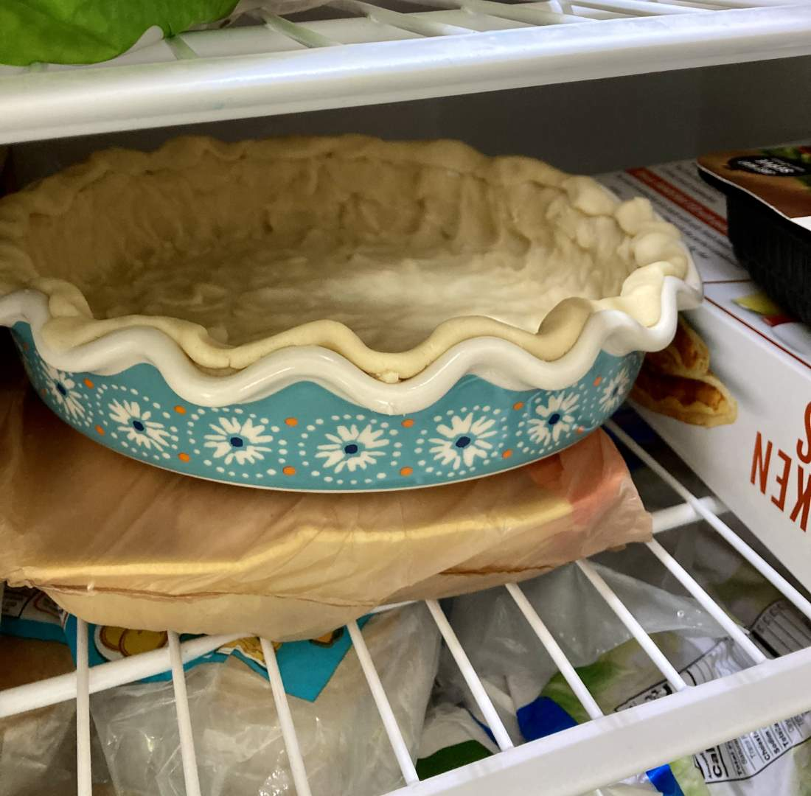
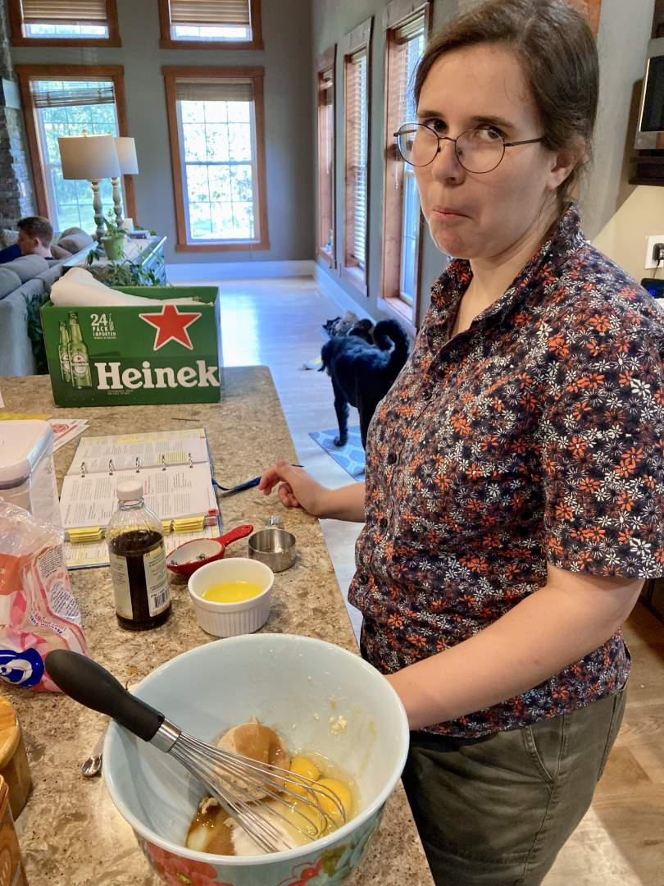
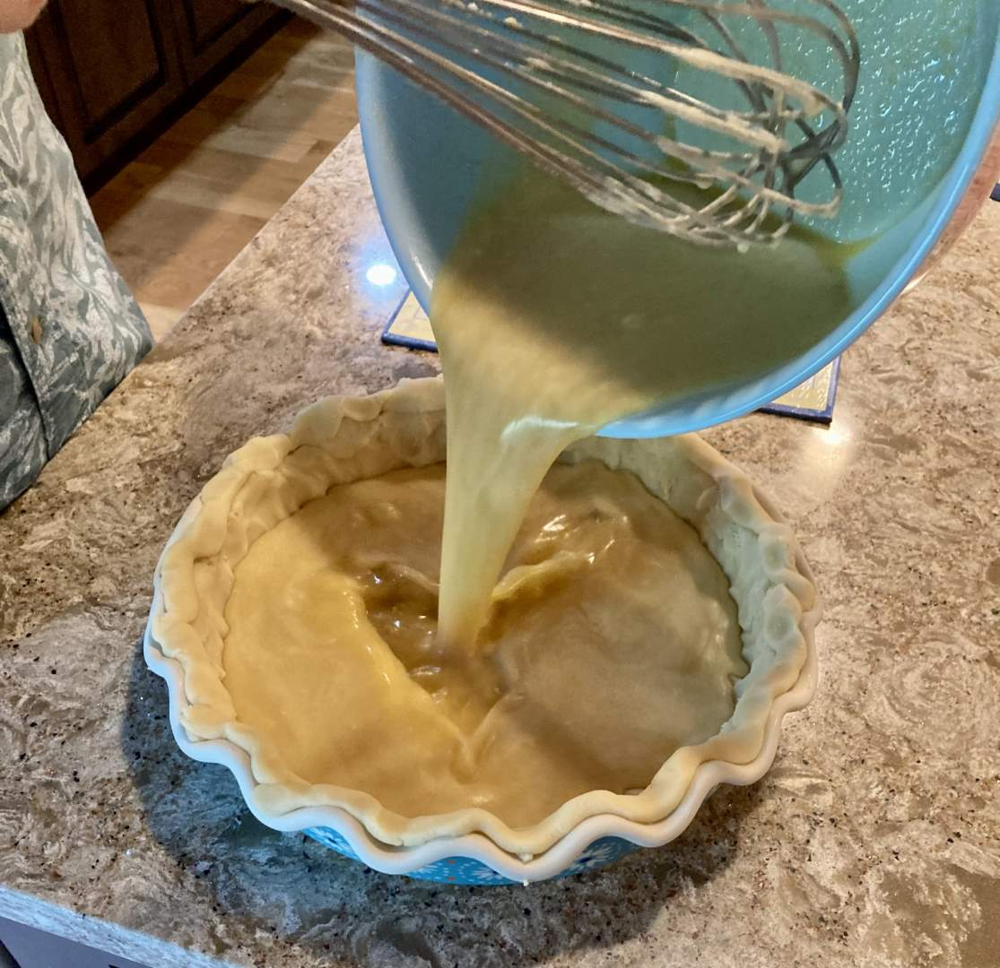
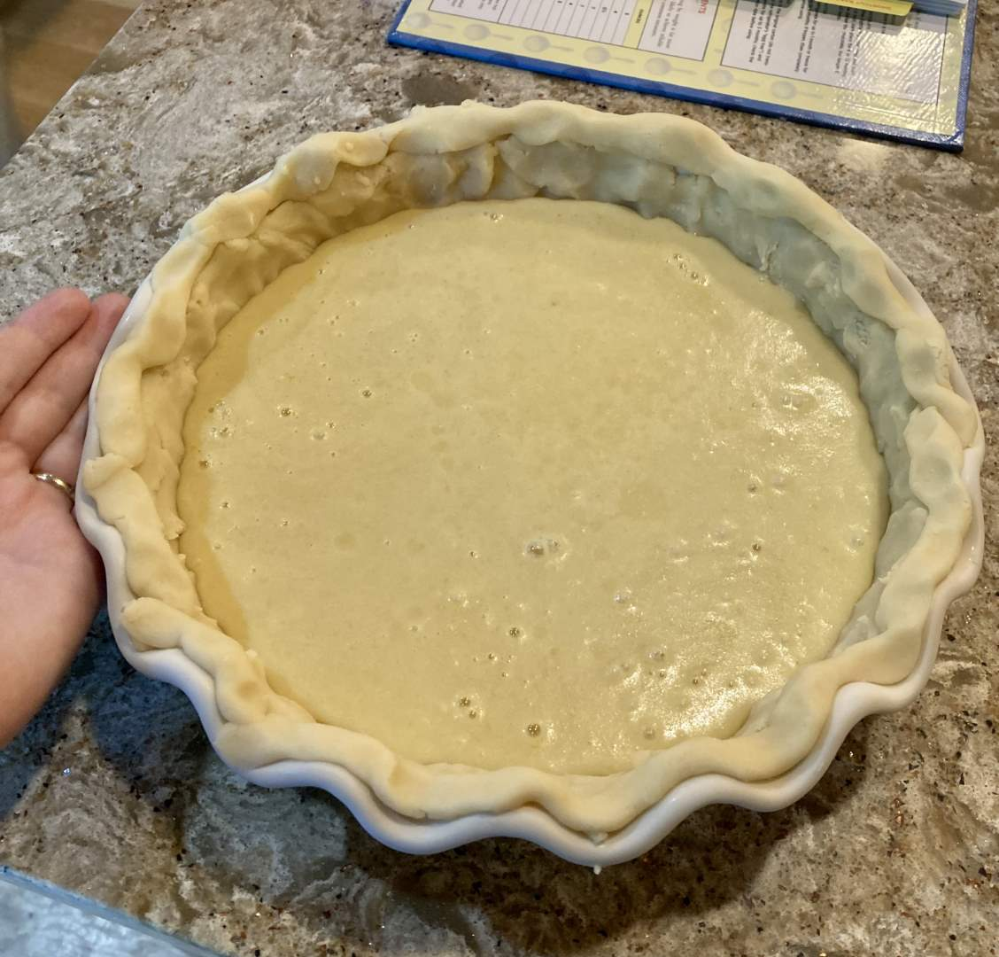
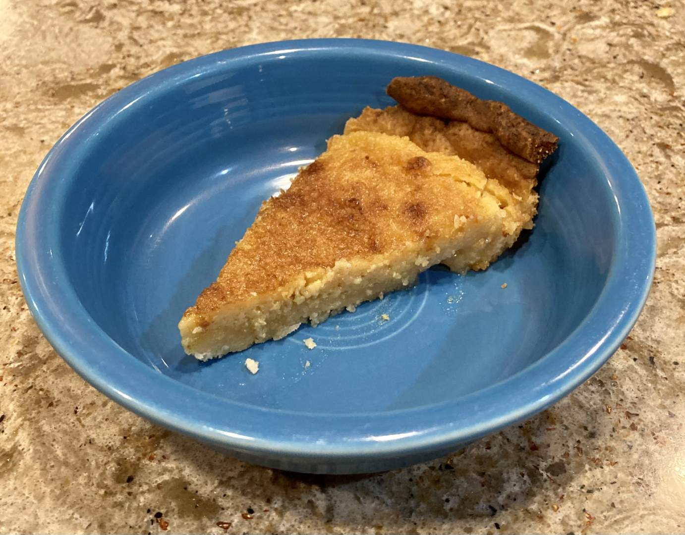
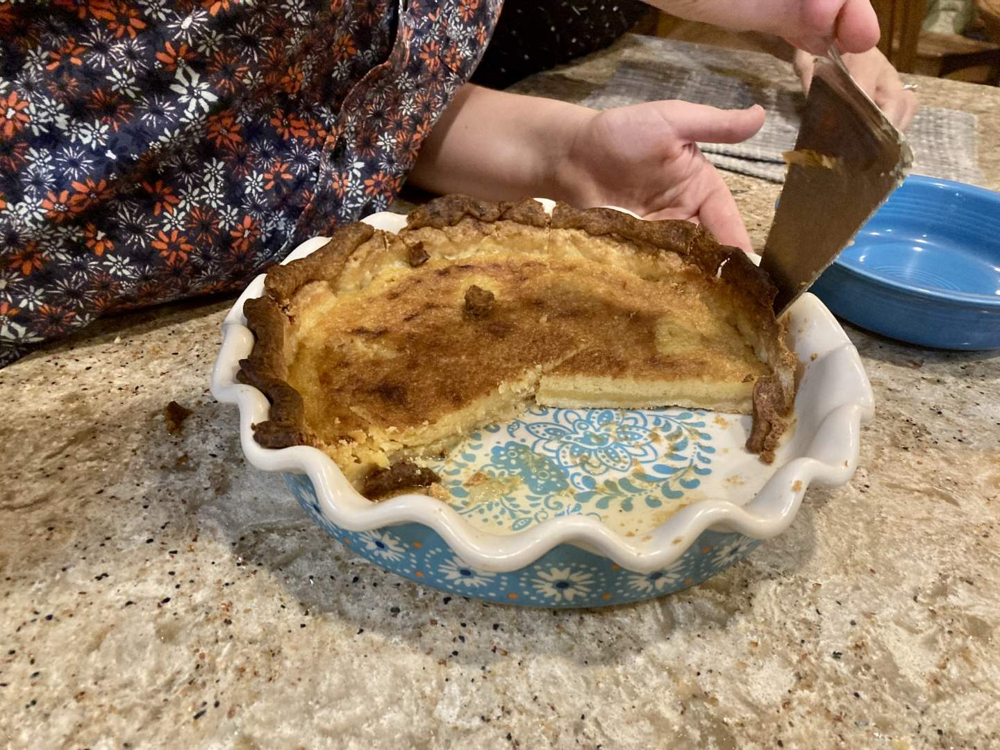

Pie 6: Buttermilk Chess
2023-08-04Filling recipe: “Buttermilk Chess Pie.” p. 390 of The America’s Test Kitchen Family Baking Book.
Crust recipe: “Easiest Ever Press-In Single-Crust Pie Dough.” p. 363 of the same.
Taste:
Difficulty:
Vibes:
Suggested pairings: pizza, cheesy bread
It’s been a busy week for us. This has been the first full week of KB's new job and my medical school started officially on Monday. We also got the keys to our new apartment on Friday. Due to the time spent on the adjustment, we decided to make a straightforward pie this week.
The fat in this press-in crust is mostly butter with a bit of cream cheese mixed in. In my opinion, it was actually more difficult to make than a normal roll-out crust, since I've gotten pretty good at that. Pressing the crust in was pretty time-consuming, though it would be good for a parent and child to do together. Because of the weird crust I gave this pie two slices for difficulty instead of the one merited by the filling.
Making the filling was simple--just plop in the ingredients and vigorously stir. We hit a bit of a snag, however, when Katie Beth put in 1 tbsp salt instead of ¼ tsp (a 12x dose). She washed that batch of chess pie filling down the drain and made another. A pie that salty would not have met our high standards for toothsomeness.
Pouring the filling into the chilled crust and baking in a 375 F oven was also pretty easy compared to the baking process of some of the other pies we have made.
Wow, the pouring filling made a heart shape in this picture! Maybe this will be a sign that everyone will love the pie!
Pleased with having spared ourselves from baking roughly half the ideal daily sodium intake into each slice, we let the pie cool for a generous length of time before slicing and enjoying.
Turns out the pie had issues. The filling was very thin, which contributed to the upper crust burning. Some slices had soggy bottoms, though the ones that were well-baked were pretty tasty. Overall we gave the pie a for both vibes and taste.
 If we had spent more time on this pie, it would have been more disappointing. Someday we'll have to come back to the chess pie world to plant our flag more firmly.